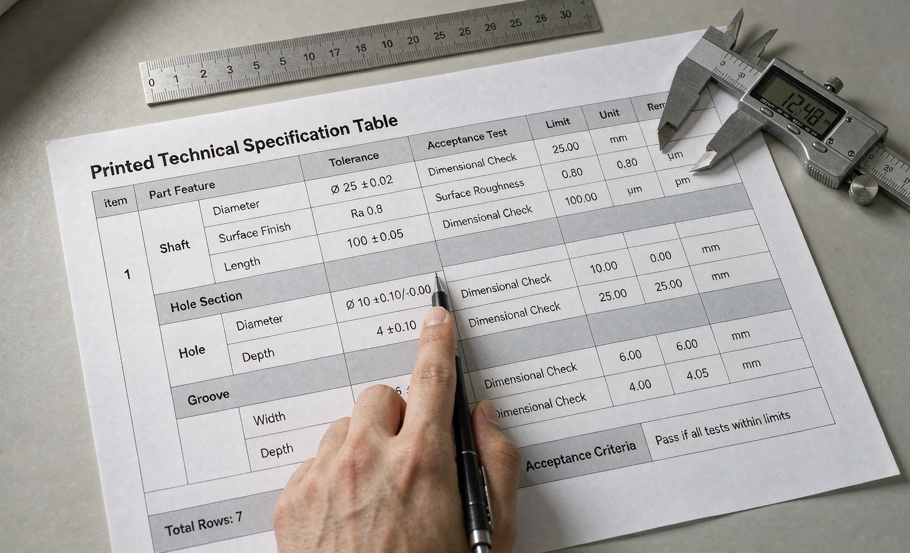

Published October 13, 2026 | By HDPTH Technical Editorial Team
Every slitter rewinder quotation arrives with a specification sheet, and almost none of them agree on what matters. One leads with speed, another with width, a third with automation features and a fourth with price breakdown. Meanwhile the lines that decide whether the machine produces acceptable rolls on your web — tension accuracy, tolerance definitions, acceptance criteria — are buried, abbreviated or missing entirely. This guide gives you a reading order and a checklist for the details that carry purchase risk, complementing the commercial side covered in our quotation comparison guide.
Pass one: headline limits and what they hide
The first third of any spec sheet states limits: maximum web width, mechanical speed, maximum roll diameter, material thickness range, and sometimes knife count. These are capacity boundaries, and they are the least differentiating part of the document. Two machines that both claim 1600 mm and 400 m/min can behave entirely differently at 300 m/min on your film — one holds tension and edge quality, the other does not. Read the limits to rule machines out, not to rank the survivors. Speed deserves special suspicion: the number means nothing without its operating point, as our line speed guide explains, so require material, width and roll diameter next to every speed figure before you score it.
Pass two: the operating detail that decides your product
The middle of the sheet is where the real machine lives. Tension range and control accuracy decide whether thin or elastic webs run at all — the selection logic is covered in our load cell versus dancer guide — so a tension line without an accuracy figure is an incomplete claim. Slit width tolerance should carry a number, a measurement method and a length scale; ‘high precision’ is not a specification, and the tolerance implications are explained in our slit width tolerance guide. Changeover and setup times decide short-run economics, so require measured times for a defined change, not adjectives. Then the integration block: connected power and voltage options, air consumption at a stated pressure, machine mass, largest component for rigging, floor plan with maintenance clearances and the ambient limits the machine accepts. Missing utility data is the classic cause of site delays, a risk our site preparation guide is built around — every blank line here becomes a cost in your civil and electrical budget.

Pass three: guaranteed, optional or absent
The final pass separates commitment from decoration. Mark every performance number as one of three things: guaranteed and testable, listed as optional at a price, or stated with no test path at all. A speed that appears in the factory acceptance test protocol is real; a speed that only exists on the sheet is marketing, and the difference is the subject of our performance guarantee guide. Options deserve the same scrutiny: a machine quoted low with everything critical ‘optional’ is often dearer once the option list is priced, which is why the total cost exercise in our total cost of ownership guide starts from a normalized configuration. And weigh what is absent: no spare parts philosophy, no documentation scope, no training hours — the gaps our warranty and spares guide treats as decision factors — are as informative as any line present.
Traps that appear in real quotations
Three patterns recur across supplier quotations. The bundled option: accessories quoted as a lump sum, so no one can tell whether the “complete package” is competitive or whether half of it is markup on items you already own — unbundle everything and price it line by line. The conditional tolerance: a slit width figure quoted for one material at one width, silently narrowing for thinner or wider products; ask for the tolerance map across your full product range. The inherited range: a rewind shaft quoted to 1250 mm roll diameter that actually assumes a light web, because shaft deflection and bearing capacity limit heavy rolls sooner — the physics are in our shaft deflection guide. In each case the sheet is not lying; it is answering a question you did not ask. Your matrix forces the right questions, and the answers become the FAT criteria.
Build the matrix, then let it score
Do not compare sheets; compare your matrix. List the fifteen to twenty lines that decide quality and output on your products, define the units and required conditions for each, and send the identical matrix to every shortlisted supplier. Score only testable entries, weight them by your operation’s priorities — a short-run converter weights changeover above top speed; a commodity producer the reverse — and record blank or evasive answers as risk points. Suppliers who answer a hard matrix with data are telling you how they will behave during commissioning; suppliers who answer with brochure pages are telling you that too. The sheet is the first test of the relationship, and it predicts the FAT.
Drowning in unequal quotations?
Send HDPTH your material and product list. We will complete your comparison matrix with testable, condition-attached figures and put the same numbers into the acceptance protocol — so the sheet you buy is the machine that arrives.
Submit Your Project InquiryFrequently asked questions
Why do two spec sheets with similar headline numbers differ so much in real performance?
Headline numbers — width, speed, roll diameter — are limits, not descriptions of how the machine behaves inside those limits. Two machines can both claim 400 m/min and 1600 mm width, yet differ completely in tension range and accuracy, changeover time, edge quality guarantees, spares strategy and software openness. The spec sheet tells you what the machine can survive; the detail lines and the contract tell you what it will actually deliver on your product.
Which lines on a slitter rewinder spec sheet matter most?
Prioritize five groups. Material and operating point: web types, grammage or thickness range, and the tension range with its control accuracy. Performance conditions: speed stated with a material, width and roll diameter, plus acceleration rates. Quality: slit width tolerance, roll hardness or geometry criteria and edge quality class. Integration: utilities, mass, floor plan, operator interfaces and data protocols. Contract anchors: what is guaranteed, tested and documented, and what is merely listed as optional.
What are the red flags when reviewing a quotation spec sheet?
Speed without a material and operating point, tolerances stated as ‘high precision’ instead of numbers, tension given as a range without accuracy, options listed without prices, utilities and machine mass missing or rounded, spare parts lists without part numbering philosophy, and acceptance criteria absent or written as a free run. Every number that sounds impressive but cannot be tested should be treated as unproven until it appears in the FAT protocol.
Should tolerances appear on the spec sheet or in the contract?
Both, consistently. The spec sheet states the capability — slit width tolerance, tension control accuracy, roll geometry limits — and the purchase contract makes those numbers binding through the acceptance test. If the sheet says ±0.1 mm and the contract is silent, you have bought a brochure claim. If the FAT checklist repeats the same numbers with measurement methods and pass criteria, the claim becomes enforceable.
What utility and installation data do I need from the spec sheet?
Total connected power with voltage and frequency options, peak and average consumption, compressed air demand at a stated pressure, extraction or ducting needs, machine mass and the largest single component for rigging, floor loading points and foundation plan, overall dimensions with maintenance access clearances, and ambient condition limits. Missing utility data is one of the most common causes of site delays, because it hides in civil, electrical and crane work that must be budgeted months before the machine ships.
How do I compare spec sheets from different suppliers fairly?
Build your own matrix, do not reuse theirs. List the lines that decide your product’s quality and output, then send the same matrix to every supplier and require entries in engineering units with conditions attached — speed with material, tolerance with measurement method. Score only comparable, testable claims, weight them by your operation’s priorities, and treat blank cells as higher risk than conservative numbers.